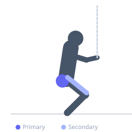
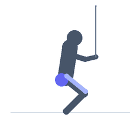

Exercise guide / Banded Squat Walk
Banded Squat Walk
The banded squat walk is a dynamic hip abduction exercise performed in a partial squat position while stepping laterally against the resistance of a loop band placed above the knees or around the ankles. Maintaining a squat while stepping sideways forces the gluteus medius to both stabilize the pelvis and drive abduction, making it an effective warm-up and accessory exercise for lower body training.
Primary muscles
gluteus medius
tensor fasciae latae
Secondary muscles
gluteus maximus
quadriceps
Stabilizers
hamstrings
transverse abdominis
Equipment
Resistance Band (Loop / Mini Band)


Starting position
- Place a loop resistance band above the knees (easier) or around the ankles (harder). Stand with feet shoulder-width apart and descend into a partial squat — roughly quarter to half squat depth.
Setup
- Choose band tension based on ability. Heavier bands around the knees provide more resistance; lighter bands around the ankles increase range.
Steps
- Step 1: Place the band above knees or around ankles. Assume a partial squat with feet shoulder-width apart, chest up, core braced.
- Step 2: Step one foot laterally to widen the stance beyond shoulder width, maintaining the squat depth.
- Step 3: Bring the trailing foot to follow, returning to shoulder-width stance — still in squat.
- Step 4: Continue walking in the same direction for the prescribed distance or steps.
- Step 5: Repeat in the opposite direction.
Coaching cues
- Stay low — don't pop up between steps
- Push knees out — fight the band
- Keep toes forward — don't let feet turn out excessively
Breathing
- Breathe rhythmically throughout — exhale with each step.
Range of motion
- Steps of 30–45 cm per stride. Stay in a consistent partial squat throughout.
Tempo
- Controlled step pace — roughly 1 step per second.
Common mistakes
- Standing up out of the squat between steps — maintain depth throughout
- Letting the knees cave inward — push knees out against the band
- Taking too large a step, which compromises squat position
Safety
- Low risk exercise; common as a warm-up before squats and deadlifts
- Avoid if the band causes knee pain — use a lighter band or adjust position
Training
- hypertrophy: 10–20 reps
- endurance: 15–25 reps
- hypertrophy: 2–3 sets
- endurance: 2–3 sets
- Rest: {'hypertrophy': 45, 'endurance': 30}